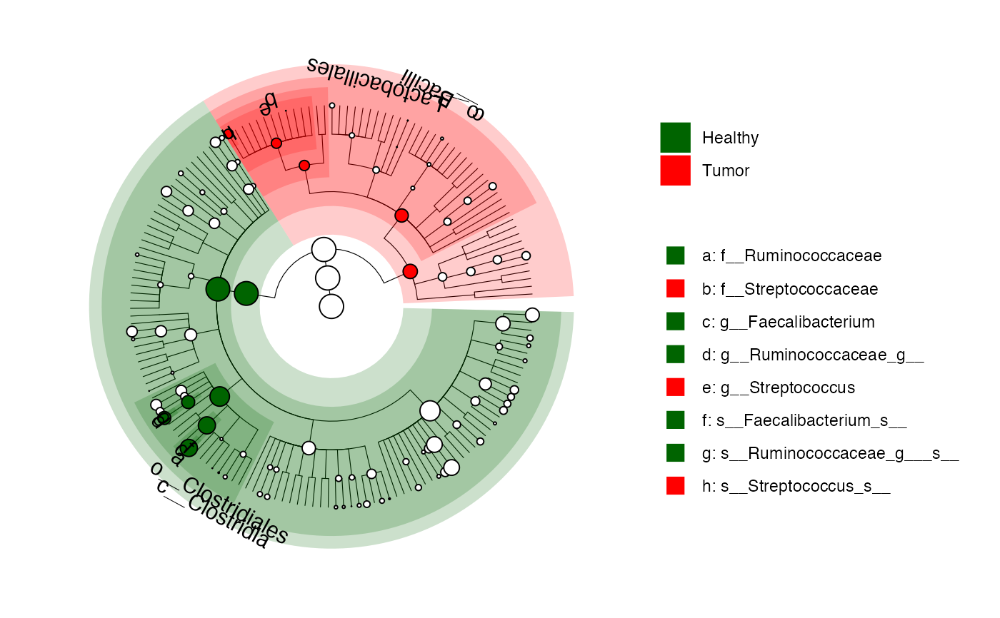

plot cladogram of micobiomeMaker results
a microbiomeMarker object
a color vector, used to highlight the clades of microbiome biomarker. The values will be matched in order (usually alphabetical) with the groups. If this is a named vector, then the colors will be matched based on the names instead.
logical, whether show all the features or only
markers in the cladogram, default FALSE.
numeric, size of branch, default 0.2
alpha parameter for shading, default 0.2
the parameter 'a' controlling node size:
node_size=a*log(relative_abundance) + b
the parameter 'b' controlling node size:
node_size=a*log(relative_abundance) + b
max level of taxa used to label the clade, other level of taxa will be shown on the side.
font size of the clade label, default 4.
shape used for annotation, default 22
size used for annotation shape, default 5
a list specifying
extra parameters of group legend and marker legend, such as direction (
the direction of the guide), nrow (the desired number of rows of
legends). See ggplot2::guide_legend() for more details.
a ggtree object
This function is modified from clada.anno from microbiomeViz.
data(kostic_crc)
kostic_crc_small <- phyloseq::subset_taxa(
kostic_crc,
Phylum %in% c("Firmicutes")
)
mm_lefse <- run_lefse(
kostic_crc_small,
wilcoxon_cutoff = 0.01,
group = "DIAGNOSIS",
kw_cutoff = 0.01,
multigrp_strat = TRUE,
lda_cutoff = 4
)
plot_cladogram(mm_lefse, color = c("darkgreen", "red"))
